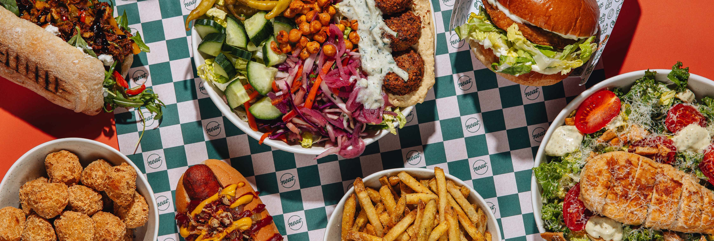

Welcome to Bear and Bee
Tucked away in the heart of Mesopotamia, Bear and Bee is a cozy, modern eatery with a love for honest food and warm hospitality. Inspired by the harmony of nature—strength and sweetness, bold flavors and delicate touches—we aim to bring comfort, creativity, and a touch of rustic charm to your plate.
At Bear and Bee, we believe in keeping things simple but exceptional. Our dishes are crafted with seasonal, locally-sourced ingredients wherever possible, cooked with care, and served with pride. Whether you're here for a lazy brunch, an intimate dinner, or a catch-up over coffee and cake, we want every visit to feel like coming home.
With a relaxed atmosphere, friendly faces, and a menu that blends classic comfort with playful twists, Bear and Bee is more than just a restaurant—it’s a place to unwind, connect, and indulge in food that feels good.